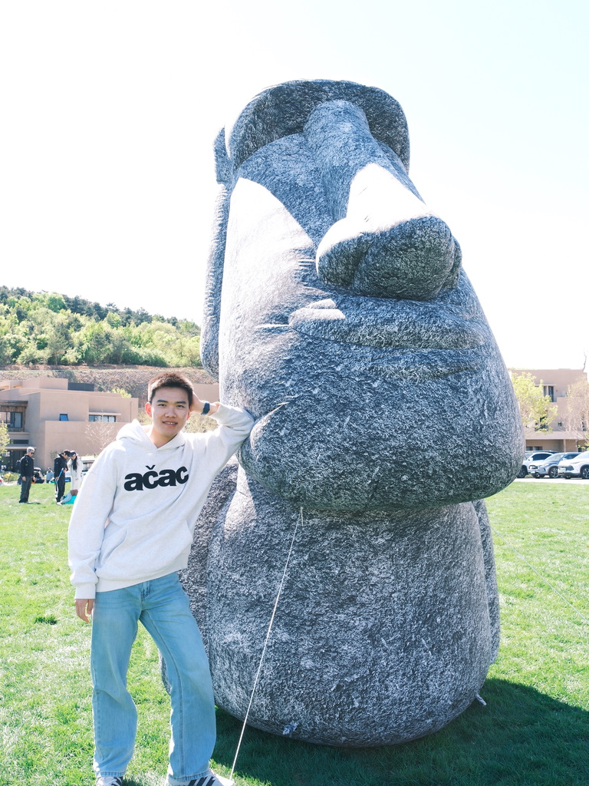

01 / 03
Perceive
the world.
A choice begins with signals: what we notice, what we value, and what remains uncertain.
Decisions Across Minds, Machines & Society
An interdisciplinary inquiry into how minds choose, machines learn, and societies move.
↓Enter the inquiryBeneath every decision lies a meeting point: perception and value, algorithms and uncertainty, individuals and the systems around them. We bring these perspectives into one conversation.
A choice begins with signals: what we notice, what we value, and what remains uncertain.
Mind and machine weigh options, learn from outcomes, and form expectations about what may happen next.
Individual decisions travel outward—shaping relationships, institutions, and collective life.
Our interests span disciplines. Together they offer different ways to examine choice, intelligence, and social life.
Decision-making, cognition, and neuroscience: how people evaluate options, learn, and act.
Artificial intelligence and computational methods for modeling choice, learning, and intelligent behavior.
Economic reasoning and social context: how choices connect people, institutions, and collective life.
An independent research group bringing together decision science, neuroscience, computation, economics, and social inquiry.

For collaboration, conversation, or a good question, we would be glad to hear from you.
congzhu.liu@outlook.com ↗